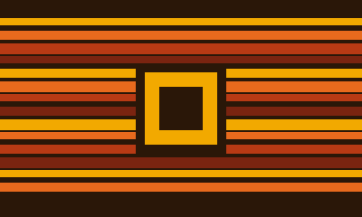
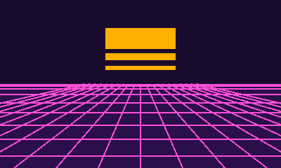
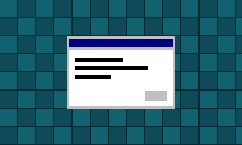

1975 — 1979
Os pioneiros
Kits de montar, fitas cassete e chaves no painel. Quem tinha um computador em casa era, quase sempre, quem o tinha construído.
Vinte anos em que o computador saiu dos laboratórios, entrou na sala de estar e virou parte da vida de todo mundo.

Kits de montar, fitas cassete e chaves no painel. Quem tinha um computador em casa era, quase sempre, quem o tinha construído.

Micros baratos, jogos em fita, revistas de listagens e, no Brasil, clones nacionais que ensinaram uma geração a programar.

CD-ROM, interfaces de janelas e gráficos poligonais. O computador deixa de ser coisa de nerd e vira eletrodoméstico.